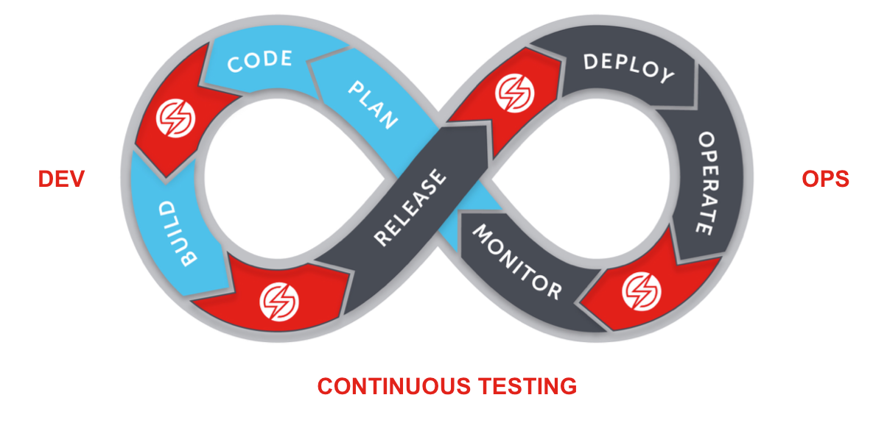

Selenium 301
Testing at the speed of Awesome
Using Reveal.js
Trainer Introduction
James Tacker
Tech Consultant and Trainer
Previous Work:
- Atlassian
- NGINX
- New Relic

Agenda

Scaling Automated Tests
Module Objectives
This module enables you to:
- Optimize your parallelized test builds
- Abstract components into page objects in order to onboard team members quickly
Scaling Tips
- Page Objects for Robust Testing
- Frameworks for Parallelization
- Jenkins for Automated Builds
Page Object Overview
- "Object Repository"
- Unique class per page
- Base classes can scale
- Test Code less brittle
Page Base
- Log Ins
- Mouse Clicks
- Keystrokes
- Waits/Pauses
- Button Presses
Repeatable actions that scale across ALL pages
Page Base Example
public WebElement find (By locator) {
return driver.findElement(locator);
}
public PageBase click_on (By locator) {
find(locator).click();
return new PageBase(driver);
}
public String get_text (By locator) {
return find(locator).getText().toString();
}
public WebElement visibleWait(By locator, Integer timeout) {
timeout = timeout != null ? timeout : 10;
WebDriverWait wait = new WebDriverWait(driver, timeout);
return (WebElement) wait.until(ExpectedConditions.visibilityOfElementLocated(locator));
}
Page Object
- Extend the Base class
- Create constructor for intialization
public class GuineaPigPage extends PageBase {
...
public GuineaPigPage(WebDriver driver) {
super(driver);
}
}
Page Object Example
public class GuineaPigPage extends PageBase{
public GuineaPigPage(WebDriver driver) {
super(driver);
}
By commentBox = By.cssSelector("#comments");
By yourComments = By.id("your_comments");
public void text_box() {
type_in(commentBox, "Hello World");
}
public String read_comment() {
this.visibleWait(yourComments, 10);
return get_text(yourComments);
}
...
Page Object Best Practices
- Class for each Page
- Abstract re-usable code in Base class
- Create Base Test Classes
- Do NOT put assertions in Page Objects
Test Automation Frameworks
- JUnit
- TestNG
Java Frameworks:
- Python: Py.test
- Ruby: Rspec, Cucumber,
- Javascript: Mocha, Protractor
Other Frameworks:
WebDrivers and CI/CD
Scaling Strategies (Jenkins example):
- Distribute builds using slave and master nodes
- Leverage Test Configuration options to distribute tests across nodes
- Use Selenium Factory to offload environment varaibles
- Configure Matrix Projects
ThreadLocal and Parrallelizaiton
- Set private variables via multithreading
- Allows each
Threadto execute same code with different variables- Useful tool for static data
- Requires configuration in Maven
pom.xml - Not-so useful for ambient data
- May cause headaches with single-threaded app servers (i.e. NGINX)
DataProvider Annotation
Execute parrallel commands using an
Object Array or HashMap for the data mapping
@DataProvider(name = "hardCodedBrowsers", parallel = true )
public static Object[][] sauceBrowserDataProvider(Method testMethod) {
return new Object[][]{
new Object[]{"internet explorer", "11", "Windows 8.1"},
new Object[]{"chrome", "41", "Windows XP"},
new Object[]{"chrome", "54.0", "OS X 10.9"},
new Object[]{"firefox", "27.0", "Windows 10"},
new Object[]{"safari", "7.0", "OS X 10.9"},
}
;
Lab 1.1: Advanced Page Objects
- In the Eclipse package explorer (left panel), open
sel301-java-testng-lab1. - In the package manager, select
pages > PageBase.java - Note the methods here and their supposed purpose.
- Back in the package manager, select
tests > TestBase.javain a new tab - Enter your Sauce Labs credentials for the
"USERNAME"and"ACCESS_KEY"variables. - Note
TreadLocaland what it tries to achieve
Lab 1.2: Setting the Page Object
- Open
GuineaPigPage.javaclass in thepagespackage and uncomment the constructorpublic GuineaPigPage(WebDriver driver) { super(driver); } - Open
https://saucelabs.com/test/guinea-pigin a local browser and inspect the page - Create locators for the hyperlink, send button, comment box, and comment result
By linkTitle = By.linkText("i am a link"); By submitBttn = By.xpath("//*[@id=\"submit\"]"); By commentBox = By.cssSelector("#comments"); By yourComments = By.id("your_comments");
Lab 1.3: Setting the Test Methods
- Open
GuineaPigTest.javaclass in thetestpackage and uncomment the method calls fromGuinePigPage.javain both test methods: linkTextcommentTest
page.getPage();
page.hyper_link();
assertEquals(page.get_title(), "I am another page title - Sauce Labs");
page.text_box();
page.submit_bttn();
String end_result = page.read_comment();
assertEquals(end_result, "Your comments: Hello World");
Lab 1.4: Wait! What happened?
- Save and Run a Maven test; the
commentTest(s)should fail - Check the console log in Eclipse, and note the
NoSuchElementExceptionerrors - Open
GuineaPigPage.javaand create the following line in theread_comment()method - Save and re-run the test. What are the results?
this.visibleWait(yourComments, 10);
Writing Testable Code
Module Objectives
This module enables you to:
- Incorporate Developer feedback
- QA Engineer/tester is a 'first class citizen'
- Specify object identifiers in the source code to ease test automation
- Follow best locator strategy practices
Automation as a Project
- Treat as a Software Development project
- End to End vs. Unit Testing
Developer Feedback
- Earlier in the Lifecycle
- Testing Pyramids
- Passing Tests vs. Testing Apps
- Avoid Duplication and ensure Cohesion
Duplication
If multiple groups own different tests, a natural divide will occur. Ways to mitigate this problem:
- Work Iteratively
- Become a "First-Class Citizen"
- Align with Business Analysts' stories
- Avoid the Ice Cream Cone Anti-Pattern
Ice-Cream Cone
 Image Courtesy of: WatirMelon.Blog
Image Courtesy of: WatirMelon.Blog
How did this happen!!?
- Lack of Collaboration
- Too Many Owners (duplication)
- Testing at the 'Highest' Level
- Disagreement on Goals
Ideal Testing Pyramid
 Image Courtesy of: WatirMelon.Blog
Image Courtesy of: WatirMelon.Blog
Steps to Fix Ice-Cream
- Cross-role parings
- Story Kick-offs!
- Test at 'Lowest' Level
- Shifting Left
- Shallow DOT
- Shared (Veritcal) Metrics
Cohesion
- Two teams, one codebase
- Maintainable test suite that respects the entire stack
Mythical Coverage
Perfect is the enemy of great
Unit Testing Best Practices
- Aim for 80% coverage
- Use broad but manageable data set
- Treat like source code
- Not designed for bug detection
Small, Atomic, and Autonomous Testing
Small: Tests should be short and succinct.
Atomic: Tests should focus on testing a single feature.
Autonomous: Tests should be independent of other tests.
Mocks, Stubs, and Spies
- Mocks can reduce network latency by 'mocking' applicaiton backend
- Use Stubs to feed the test known data
- Spies are synomous with assertions, use them to validate tests
Functional Testing
- Developer Accountability
- Test Build Feedback
- Require functional test if frontend changed
- Ensures Build is clean when merged with master
Location Strategy Practices
- Avoid brittle, structure-based locators
- DOM
- Xpath
- Use attribute-based locators
- ids
- Links
- CSS
Lab 2.1: Broken XPath
- Open the local test page index2.html
- Inspect the "Send" button in the lower right corner of the screen
- Run the test, it should fail. What happened?
Lab 2.2: Adding the ID
- Add an id tag to the "Send" button
- Run a test to see Appium locates the element
- Move the submit button to a different position in the DOM
- Re-test to see that the test still passes
The CI/CD Pipeline and Test Process
Module Objectives
This module enables you to:
- The importance of "Shift Left" testing
- Create a pull request build and test in isolation
Overview of CI/CD Pipeline
Continuous Integration/Continuous Development
JIRA Intergration
Use Cases:
- Track and Share Test Results
- Match Builds with a Sprint
- Attach Test Assets to a JIRA Issue
- Bridge gap between Dev and QA
Available CI Plugins
- TeamCity
- Visual Studio
- Bamboo
- Bitbucket Pipelines
- Jenkins

Jenkins Plug-In
Sauce Connect can leverage Jenkins CI/CD pipeline using Sauce OnDemand CI Plugin
- Requires installation and configuration of Jenkins
- Manually test before committing to repo
Benefits of CI Plugins
- User interface to pass environment variables to tests
- Automate launch and teardown process for Sauce Connect Proxy
- Handle reporting throught SaucleLabs Test Publisher
Installing Sauce OnDemand
- Click "Manage Jenkins"
- Click "Manage Plugins"
- Click the "Available" tab
- Search and select Sauce OnDemand Plugin
- Download and install after restart
Install Sauce OnDemand plugin through the Jenkins Admin page
Configuring OnDemand
- Pass Environment Variables
- Set Authentication
- Set Desired Capabilities
- Set Jenkins Capabilities
- (Optional) Change Binary Locations
- (Optional) Enable Sauce Connect CLI options
Passing Environment Variables
SAUCE_USERNAME # user used for OnDemand
SAUCE_ACCESS_KEY # key used for OnDemand user
SAUCE_ONDEMAND_BROWSERS # JSON string representing Desired Browsers
SELENIUM_HOST # Host address of Selenium server
SELENIUM_PORT # Port address of Selenium server
Selenium Factory
To Enable:
- Declare dependencies in Maven project
- Reference Sauce Labs Maven repository
- Instantiate driver in script like so:
WebDriver webDriver = SeleniumFactory.createWebDriver();
Setting Authentication
Example:
WebDriver driver = new RemoteWebDriver(
new URL("https://"+System.getenv("SAUCE_USERNAME")+":"
+System.getenv("SAUCE_ACCESS_KEY")+"@ondemand.saucelabs.com:443/wd/hub",
desiredCapabilities);
Set Desired Capabilities in Test Script
Configure Variables in Test Scripts:
desiredCapabilities.setBrowserName(System.getenv("SELENIUM_BROWSER"));
desiredCapabilities.setVersion(System.getenv("SELENIUM_VERSION"));
desiredCapabilities.setCapability(CapabilityType.PLATFORM, System.getenv("SELENIUM_PLATFORM"));
Setting Capabilities for Jenkins
Configure a SAUCE_ON_DEMAND env variable if you plan on selecting multiple OS/browser combinations for your parrallel tests
Configure SELENIUM_PLATFORM, SELENIUM_VERSION, and SELENIUM_BROWSER for a single operating test.
Example
[
{
"platform":"LINUX",
"os":"Linux",
"browser":"firefox",
"url":"sauce-ondemand:?os=Linux&browser=firefox&browser-version=16",
"browserVersion":"16"
},
{
"platform":"VISTA",
"os":"Windows 2008",
"browser":"iexploreproxy",
"url":"sauce-ondemand:?os=Windows 2008&browser=iexploreproxy&browser-version=9",
"browserVersion":"9"
}
]
Configure SC Launch and Teardown
- Extract SC binary
- Change Global Default location
- Change Per-Project Default location
- Set SC Command Line Options
- (Optional)Set Unique Tunnler Ids
Sauce Connect Proxy™
Tunneling app that establishes a secure connection between local machine and Sauce Lab VM.
- Alternative to whitelisting IPs
- Stablizes network connection
Documentation: Sauce Connect Proxy
Monitoring Tunnels
- Choose the "Tunnels" tab to view "Active Tunnels"
- Display is list format with Session ID and Host
SC Proxy Best Practices
Security/Networking
- Designated Server
- Firewall Rules
- Intrusion Detection
- Work with Network Admin
Concurrency
- 30 Per Tunnel
Marking Tests in Jenkins
- Navigate to the "Post-Build Actions."
- Select "Run Sauce Labs Test Publisher."

Pass Session ID to Jenkins
Sauce plugin parses test results file based on JOB_NAME
SauceOnDemandSessionID=session_id job_name=some_job_name
Obtain session ID and ouptut to Jenkins via stdout
private void printSessionId() {
String message = String.format("SauceOnDemandSessionID=%1$s\
job-name=%2$s",(((RemoteWebDriver) driver).getSessionId()).toString(),\
"some job name"); System.out.println(message);
}
Lab 3.1: Configure Sauce OnDemand™ Plugin
- Create a new project on Jenkins (should be listening on localhost:8080)
- Configure a Build in Jenkins
- Enable Sauce OnDemand and Sauce Connect as a build step
- Enable Test Publisher
Testing in Isolation
- "Gate" master/trunk
- Relegate Accountability Criteria (A.C.) to feature branches
- Integrates enforcement mechanism
- Accountability
Commit/Merge on Nightlys
Drawbacks:
- Bad commits cause wasted rollbacks
- Gap in feedback loop
- Too reactive i.e. policing build
- Time to fix is expensive
Pull Request Builds
Process:
- Pull Request against isolated build
- Jenkins job leverges Sauce Lab test code, provides feedback to developer
- Passed tests marked 'safe' and merged with QA build

Jenkins Trigger
- Create Test Automation as a build step with Sauce OnDemand plugin
- Triggers on every pull request
- If tests pass will automatically merge with testing build
Further Accountability Criteria
Build requirements upon pull request approval/merge:
- Unit Test must pass
- All Functional Tests must pass
'Shift Left' Testing
- Traditional: Concentrates on unit + integration testing
- Incremental: Abstracted, frequent development testing
- Agile/DevOps: Aligns with 'TDD' framework, test plan for each 'sprint'
- Model-Based: Begins earliest in cycle i.e. design and architecture models
Test Run Best Practices
- Avoid Brittle Test Locators
- Avoid Duplication
- Use Breakpoints
- Separate Functional Tests from Performance Tests
Lab 4.1: Angular PR Build Demo
Pipeline:
- Assembles Docker Container
- JS Cucumber + Protractor Selenium Framework
- Pushes to Local Python Server
- Jenkins Server Runs Test Jobs
- After Merge, Deploys to EC2 (Prod)
Lab 4.2: Angular PR Build Demo
Build Steps:
- Add Feature to App
- Run Build Test via Jenkins Job
- Resolve Test Errors
- Re-run Jenkins Job
- Merge Branches
- Deploy to Production
Test Data Management
Module Objectives
This module enables you to:
- Identify TDM strategies
- Implement an automated TDM solution
TDM Use Cases
- Regulatory Compliance
- Quality Assurance
- Data Coverage
TDM Strategies
- SQL Queries
- Flat File Solutions:
- JSON Mappings
- XML configs
- .csv, .pdf
TDM — Functional Testing
Key Tenets:
- Environment Size
- Requirements Gathering
- Fesability Check
- Regression Test
- A/B Test (versioning/build testing)
TDM — Automation Testing
- Automation of Test Data
- Tooling vs. Testing Frameworks
- Pull Request Builds
- Executed on Nightlys
- Combines Unit and Functional Tests
- Data Coverage/Integrity as a CI/CD process
CRUD Flow
Arrange test data as meaningful end-user behavior
- CREATE
- READ
- UPDATE
- DELETE
Service Virtualization
When trying to standup matching environments, use tools to simulate services
App Utilities vs. Test Framework
Testing the app vs. unit testing
Functional vs. Feature-focus